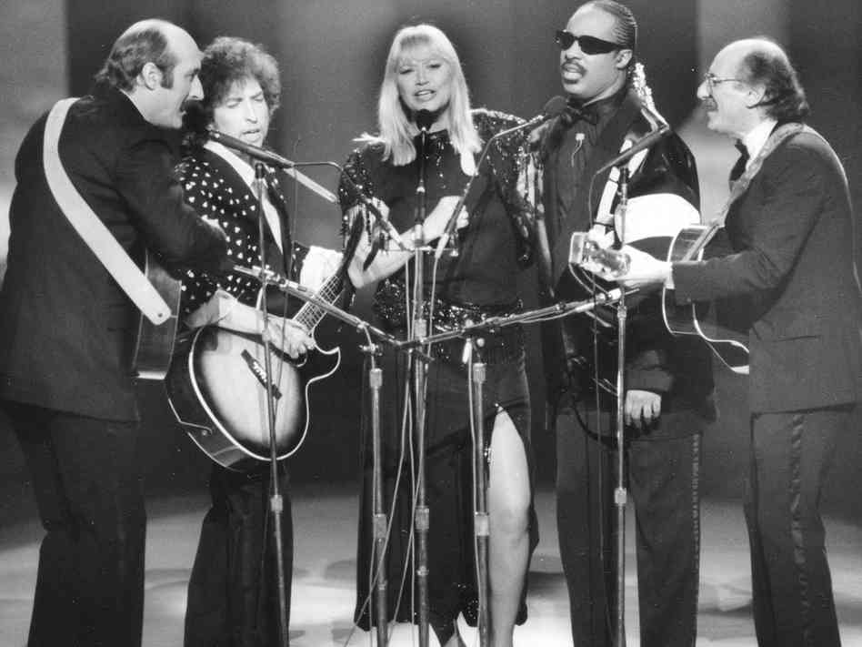
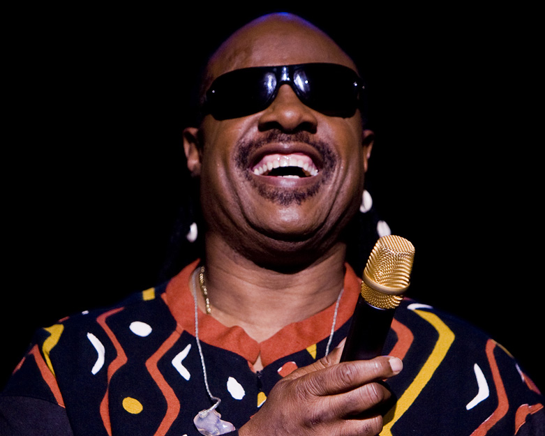
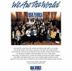

Legacy and Activism
Early Life...

In the USA, the third Monday of every January is a national holiday to celebrate the birthday of legendary civil rights leader Dr Martin Luther King. Stevie Wonder was instrumental in the campaign in the 1980s to establish Dr King’s birthday as a US national holiday. This campaign included the release of Stevie’s hit single “Happy Birthday” from the album Hotter Than July. Stevie performed the song at a concert to celebrate the very first Martin Luther King Day in 1986. This image shows Stevie performing with other musicians at the 1986 All Star Celebration Honoring Martin Luther King Jr.
Wonder is also a major supporter of President Barack Obama and was a frequent figure in Obama's successful 2008 election campaign.

Stevie Wonder has won a wide range of awards and recognition in the world of music, including 25 Grammy awards, one of which is the Grammy Lifetime Achievement Award. In fact, Wonder recieved so many Grammy awards in the 1970s that Paul Simon, upon winning album of the year, apparently thanked Wonder for not releasing an album that year!
Wonder has also won an Academy Award for Best Original Song and a range of other songwriting honours, including two honorary doctorates. Wonder has also been recognised for his ongoing commitment to social justice by the UN and several civil rights and disability organizations. His music has been highly influential amongst fans and fellow musicians alike. Amongst others, Alicia Keys, Busta Rhymes and Kanye West have named Wonder as a major influence in their musical work.

Wonder has been involved in major fundraising events throughout his career. This includes the 1985 USA for Africa charity single "We are the World", which he and other stars re-recorded in 2010 to support victims of the Haiti earthquake. Wonder has his own charity, The Wonder Foundation, which has recently been concerned with Hurricane Katrina relief efforts. Wonder's Foundation continues to make generous Christmas donations to the Junior Blind of America. He is a UN Messenger for Peace and regularly supports 18 other charities:
"Happy Birthday" music video (1981)
"That's What Friends are For" (1985)
charity single for AIDS Research
Stevie Wonder, Dionne Warwick, Gladys Knight and Elton John
